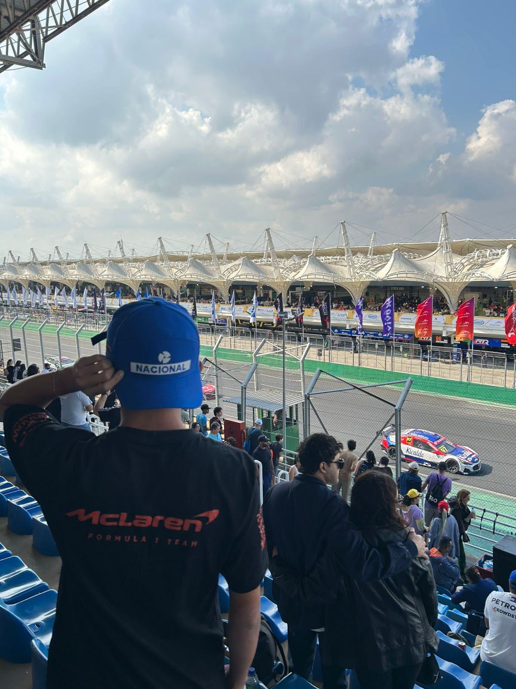

Sou Vinicius Bertaglia, tenho 15 anos e atualmente estudo na ETEC de Franco da Rocha, onde curso Técnico de Informática para Internet.
Desde cedo venho desenvolvendo interesse pela área de tecnologia, principalmente programação, com o objetivo de me tornar um profissional
de alto nível no futuro.
Este site representa o início da minha trajetória na programação. Foi desenvolvido como meu primeiro projeto prático, utilizando HTML e CSS,
com foco em aplicar os conceitos fundamentais de estruturação de páginas, organização de conteúdo e estilização. Mais do que um simples exercício,
este projeto simboliza meu compromisso em evoluir constantemente na área de tecnologia.
Além dos estudos, também trabalho em um comércio local, o que me ensinou desde cedo a importância de responsabilidade, disciplina e valorização do esforço.
Busco crescer não apenas como programador, mas também como pessoa, mantendo princípios como dedicação, respeito e vontade de aprender sempre mais.
Tenho como objetivo ingressar na área de TI o quanto antes, seja como jovem aprendiz ou estagiário, e continuar me desenvolvendo até alcançar oportunidades
maiores, inclusive no mercado internacional. Sei que o caminho exige esforço, mas estou determinado a aprender, evoluir e conquistar meu espaço
através do conhecimento.
Este projeto é apenas o começo.
